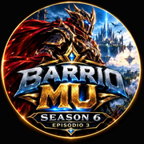

📱 Teléfono
Android y iPhone · gráficos livianos
Se juega desde el navegador, sin descargar nada de la tienda. Puedes instalarlo como una app, con el logo de BarrioMU en tu pantalla de inicio.
- Abre mu.makeseo.app en el teléfono, con el botón de abajo.
- Chrome (Android): toca el menú ⋮ arriba a la derecha y elige "Agregar a pantalla principal" o "Instalar aplicación".
- Samsung Internet: toca el menú ≡ abajo, luego "Añadir página a" → "Pantalla de inicio".
- iPhone (Safari): toca el botón Compartir (el cuadrito con la flecha) y elige "Agregar a inicio".
- Listo: abre BarrioMU desde el icono, como cualquier app.
La primera vez descarga los gráficos (mejor con WiFi). Después abre rápido.
📱 Abrir en el teléfono